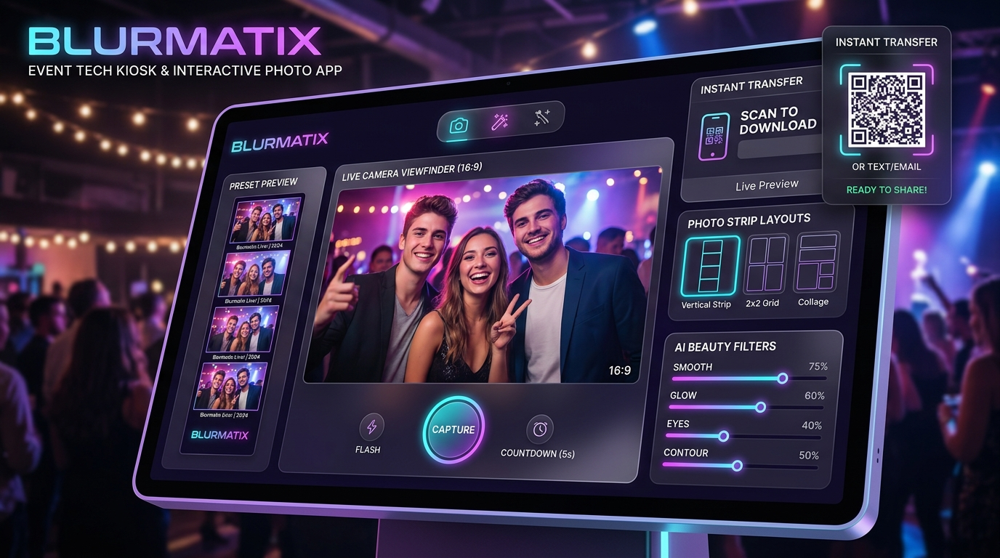

Selected Creative Tech Project
Blurmatix — Digital Photobooth

Visit Live WebBlurmatix is an interactive digital photobooth solution engineered for events, brand activations, conferences, and weddings. It bridges hardware camera sensors, real-time computer vision filters, and high-speed cloud sharing.
Experience Architecture
Guests can take instant high-resolution snapshots with live AI beauty enhancement, customized branding overlays, dynamic animated GIF generation, and touchless instant QR code transfers to their smartphones in less than 3 seconds.
Software & Hardware Integration
Engineered by Farrel Berwyn, combining OpenCV computer vision algorithms, real-time Node.js/Electron kiosk control, and rapid dye-sublimation print automation.
Core Software & Hardware Features
Next-generation event software built for maximum stability, crowd engagement, and brand impact.
Real-Time AI Filter Engine
Instant background segmentation, color grading LUTs, and virtual AR props processed locally with GPU acceleration for zero-lag booth preview.
Touchless Instant QR & AirDrop
Immediate dynamic QR code generation allowing guests to download raw photos, customized print strips, and animated GIFs without typing credentials.
High-Speed Print Automation
Automated print queue routing to professional dye-sublimation printers producing physical 4x6 / 2x6 photo strips in under 10 seconds.
Live Event Analytics & Telemetry
Real-time organizer dashboard tracking session throughput, popular templates, peak interaction hours, and total digital shares.
Technical Specs
- Latency: Sub-50ms live viewfinder pipeline at 60 FPS.
- Reliability: Offline-resilient queue with automatic cloud sync on network recovery.
- Deployment: Touchscreen Kiosks, iPad OS Stand, and DSLR tethering rigs.